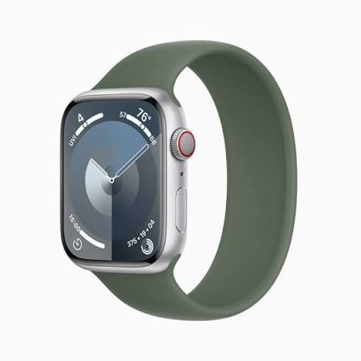
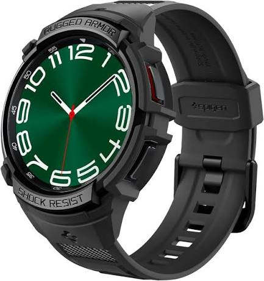

Smartphones · Ecosystems
Apple vs Samsung: the ecosystem you are really buying into
The phone is only the front door. What sits behind it, the watch, the earbuds, the tablet, the laptop, the TV and even the air conditioner, decides how much of your setup works together and how much it hurts to leave.


The phone is the front door
Most people compare phones the way they compare cars, by looking at the engine. Camera scores, chip names, screen brightness. Those things are real, but they change every twelve months and both companies are excellent at them. The part that stays with you for years is the house behind the door.
Think about what you already own, or expect to own. A watch on your wrist. Earbuds in your pocket. A laptop for work, a tablet for the kids, a TV in the living room. Every one of those either talks nicely to your phone or it does not, and the rules are set by the two brands far more than by you.
Apple builds almost all of its ecosystem itself. The phone, watch, earbuds, tablet, computer, speaker and streaming box are designed to work together, and the company controls the software on every one of them. Samsung is a different kind of company. It makes phones, watches, earbuds, tablets, TVs and home appliances at huge scale, but its computers run Windows and its phone software leans heavily on Google. So Samsung's ecosystem is broader in some directions and looser in others.
Neither approach is better in the abstract. The useful question is which one lines up with your life, so that is how this page is organized. We take one layer at a time, from messaging to smart homes, and say plainly where the two sides work together and where they do not.
Pick the ecosystem first and the phone second. It is much harder to change your mind about the first one.
Where things stand in September 2026
A short snapshot helps, because this is a busy month. On the Apple side, iOS 27 became available on 14 September. It runs on the same iPhones as iOS 26, which means anything back to the iPhone 11. Its headline feature is a rebuilt assistant called Siri AI, developed with help from Google's Gemini models. The more capable parts of it need an iPhone 15 Pro or newer, and reports say it will not be available in the European Union at launch.
Hardware arrived at the same time. The iPhone 18 Pro and iPhone 18 Pro Max went on sale on 18 September, and Apple also announced a folding model called the iPhone Duo, along with a new Apple Watch Series 12 and AirPods 5. The standard iPhone 18 is expected to follow months later, so a buyer who wants the cheaper model has to wait or choose last year's.
Samsung's current flagships are the Galaxy S26, S26+ and S26 Ultra, launched in the first half of the year. One update to those phones matters for this article: from late March, Samsung began adding support for AirDrop to its Quick Share feature, starting with the S26 family. We come back to what that means in a moment.
Messaging and calls
Messaging is where the two worlds first collide, and it is the easiest place to overstate the problem. iMessage is Apple's own service, and it works only between Apple devices. When an iPhone texts a Galaxy, the message goes out as a standard text, which is why you see a different coloured bubble. In the past that meant low-quality photos and no read receipts. Since Apple added support for RCS in iOS 18, texts between iPhone and Android carry better media, typing indicators and proper group behaviour than the old system did. In May 2026 Apple and Google also began rolling out end-to-end encryption for those chats in beta, though it needs current software and a supported carrier on both sides.
It still is not identical to iMessage. Some features, such as certain effects and edits, remain limited to Apple-to-Apple chats. If your family group chat is the centre of your digital life and everyone owns an iPhone, that difference is real and you will feel it every day.
For calls, FaceTime is the part people miss. Apple lets an Android user join a FaceTime call through a web link, so a Galaxy owner can take part, but only when an iPhone user starts the call. Samsung owners can use Google Meet or any of the usual video apps on both platforms.
The honest summary is that the messaging layer matters much less than it did five years ago. If your friends and relatives live on Telegram or WhatsApp, as many people in our region do, neither phone gives you an advantage here. If they live in iMessage, an iPhone gives you the smoother experience.
Sharing files, photos and links nearby
AirDrop, on Apple devices, is the feature many iPhone owners would name if asked what they would miss most. You pick a person or device nearby, tap send, and the file arrives at full quality without any account or cloud. Android has its own equivalent called Quick Share, and it worked well between Android phones and, on Samsung devices, with Windows PCs.
The wall between the two used to be complete. Google broke through it first, adding AirDrop compatibility to its Pixel 10 in late 2025. Samsung followed with the Galaxy S26 family, and reports say the rollout began on 23 March 2026 in South Korea before spreading to other regions. It lets an S26 send to and receive from iPhones, iPads and Macs directly over Bluetooth and Wi-Fi, without the cloud.
There are conditions. At launch the feature covered only the S26, S26+ and S26 Ultra, and Samsung said other models would follow later. It needed a recent version of Google Play Services and the latest Quick Share app, and the Galaxy owner has to switch on an option to share with Apple devices. On the iPhone side, the receiver must allow AirDrop from everyone, and that setting reverts after ten minutes, exactly as it does between two iPhones.
What this means in practice
- If you own an S26 and your partner has an iPhone, sending holiday photos got a lot easier this year.
- If you own an older Galaxy, check whether your model has received the update before counting on it.
- If most of your sharing is within your own household of one brand, this bridge matters little.
Watches and earbuds
This is where the lock-in gets serious, and it is one-directional in a way that catches people out.

Apple Watch (an earlier model, shown for reference)
Galaxy Watch (an earlier model, shown for reference)An Apple Watch needs an iPhone. You set it up with one, pair it with one, and manage it from one. There is no way to run it from an Android phone. That means buying an Apple Watch is effectively a commitment to keep buying iPhones for as long as you wear it.
A Galaxy Watch is more relaxed but still not free of strings. It works with Android phones, and it will do most of its everyday job with any of them. Some of the health features, however, are restricted to Samsung phones. Blood pressure and ECG functions on Galaxy watches have been tied to Samsung's own health app, which runs only on Galaxy phones, so a Galaxy Watch paired with a non-Samsung phone loses part of what you paid for. Galaxy Watches do not work with an iPhone at all.
Earbuds are easier. AirPods will connect to an Android phone as ordinary Bluetooth earbuds, and they sound fine, but you lose the extras: the instant pairing, the automatic switching between devices and most of the settings. Galaxy Buds work with an iPhone in the same limited way, and Samsung does not offer its companion app there, so you cannot tune them properly. In both cases the earbuds are not a reason you cannot switch, but the experience is clearly at its best inside the matching family.
Tablets and laptops
Here Apple's approach of owning everything shows its strength. An iPhone, iPad and Mac share a set of features known collectively as Continuity. You can copy on one device and paste on another, start writing an email on the phone and finish it on the laptop, answer a call from the computer, or use the iPad as a second screen. Because Apple writes the software for all three, these features tend to work the same way from one year to the next.
 iPad Pro (earlier model)
iPad Pro (earlier model) Galaxy Tab S9 (earlier model)
Galaxy Tab S9 (earlier model)Samsung's answer is looser but flexible. The Galaxy Tab series works closely with Galaxy phones and includes DeX, a desktop-style mode that turns a tablet or even a phone into something close to a small computer when it is connected to a monitor. Samsung's Galaxy Book laptops run Windows, and Samsung works with Microsoft so that a Galaxy phone can show its notifications, messages and photos on a Windows PC. It also lets you send files between the two.
The difference is one of ownership. Apple decides how the whole chain behaves. Samsung shares the chain with Microsoft and Google, so a feature depends on three companies agreeing. That is not necessarily a weakness, since it also means you can use a Galaxy phone with almost any laptop. It does mean the seams are more visible.
If you already use a Mac and an iPad, the pull of the iPhone is strong, and it is the strongest argument for staying inside Apple's world. If you use a Windows PC at home and work, the Galaxy route makes far more sense than it might appear from the outside.
Home, TV and appliances
 A Samsung air conditioner, the kind of appliance SmartThings can control
A Samsung air conditioner, the kind of appliance SmartThings can controlThis layer barely exists in most reviews, yet for many households it is where Samsung is strongest. The company sells televisions, refrigerators, washing machines and air conditioners, and its SmartThings app links them into one place. You can check on a wash cycle, switch off an air conditioner you forgot about, or set a routine that dims the lights when the TV turns on. If your home already has Samsung appliances, as many homes in our region do, that convenience is real.
Something worth knowing is that SmartThings is available on iPhone too, so owning Samsung appliances does not force you into a Galaxy phone. It simply works more smoothly with one. The same is true of AirPlay. Samsung TVs support it, which means an iPhone owner can send video and music to a Samsung screen without any trouble.
Apple's home products are fewer but tightly joined. The Apple TV box, the HomePod speaker and the Home app all rely on an iPhone for setup and control, and they cooperate well with the rest of Apple's devices.
A quiet equaliser is Matter, a shared standard for smart home gadgets that both companies support. A Matter light or sensor can be controlled from either Apple Home or SmartThings, so buying the smaller devices no longer ties you to one brand the way it once did. It helps most with lamps, plugs and sensors, and less with the large appliances that rely on their maker's own app.
AI features
Both companies are pushing AI hard this year, and it would be easy to let that drive the whole decision. We would be careful. The headline of iOS 27 is Siri AI, which can read what is on your screen, take actions across apps, and keep a history of your conversations. Samsung's Galaxy AI includes live translation, writing tools and Circle to Search, which comes from Google. Both sides now lean on Google's Gemini models in some way, which says something about how quickly this area is shifting.
Two practical limits stand out. First, hardware gates the features. On Apple's side the more capable Siri AI features require an iPhone 15 Pro or newer, so an older iPhone gets less. Second, region matters. Reports say Siri AI will not launch in the EU, and language support arrives in stages. Samsung's features also vary by country and by language.
Our advice is to treat AI as a bonus and not as the main reason to pick a brand. These tools change with every software update, and the feature that sounds impressive in September may look ordinary by the following spring. The ecosystem layers above stay put much longer.
Updates, lifespan and resale
A phone that stops getting updates is a phone with a shelf life, so this matters more than it once did. Apple's record is easy to check: iOS 27 runs on the iPhone 11, a phone from 2019. That is a seven-year span from launch to a major new release, and Apple has long been strong here.
Samsung has narrowed the gap. It now promises seven years of operating system and security updates on its recent Galaxy S phones, a much shorter window than it offered a few years ago. For the S26 generation that puts both companies in a similar place on paper.
Our rough judgement of how much you give up by leaving, from small to large. It is a guide and not a measurement.
Resale is harder to compare. iPhones generally keep more of their price on the used market, which softens the cost of upgrading. Galaxy phones tend to drop faster, but they also start cheaper and often come with discounts. Look at the total cost over the years you plan to keep the phone rather than the sticker price alone.
Four ideas worth dropping
"Green bubbles mean poor quality"
This was fair when texts between iPhone and Android went through the old system. With RCS in place, photos, video and group chats between the two are much better than they were. The colour difference is now mostly a social signal, and in many countries hardly anyone notices it.
"Android has nothing like AirDrop"
Quick Share has covered Android-to-Android sharing for years, and this year it began reaching Apple devices on the Galaxy S26. It is not universal yet, but the old claim that the two sides cannot share nearby files no longer holds across the board.
"One side is safe and the other is not"
Security depends far more on updates and habits than on the badge. Both companies now support their phones for many years, and both invest heavily in protection. A well-maintained Galaxy is safer than an iPhone left years behind on updates, and the reverse is equally true.
"Samsung is just a phone company"
It is one of the largest makers of televisions and household appliances in the world, and that is exactly why its ecosystem looks different. Someone who judges Samsung only by the phone is missing half of what the company offers, particularly in homes that already run on its products.
What it costs to leave
Changing sides is not as painful as people fear, provided you plan for it. Both companies offer tools to help: Apple's Move to iOS app for coming over from Android, and Samsung's Smart Switch for moving in either direction. The trouble is not the tools, but the things they cannot move.
| Layer | iPhone to Galaxy | Galaxy to iPhone | Difficulty |
|---|---|---|---|
| Contacts and photos | Moves with Smart Switch or an export | Moves with Move to iOS or a Google export | Easy |
| Messages | Turn off iMessage before removing the SIM | Old chats do not always transfer | Some effort |
| WhatsApp history | Supported through WhatsApp's own transfer tools | Supported through WhatsApp's own transfer tools | Some effort |
| Paid apps | Usually need to be bought again | Usually need to be bought again | Some cost |
| Watch | Apple Watch will not pair with Android | Galaxy Watch will not pair with iPhone | Hard |
| Authenticator apps | Move accounts before wiping the old phone | Move accounts before wiping the old phone | Careful |
Before you switch, do this
- Turn off iMessage and FaceTime if you are leaving an iPhone, so texts keep arriving on your SIM.
- Move your two-factor codes to the new phone first. This is the step that locks people out of accounts.
- Check for subscriptions billed through the App Store or Google Play and decide which to carry over.
- Back up photos in a place you control before you erase anything.
- Keep the old phone for a week, powered on and connected, in case a code or message turns up late.
Who fits what
Put everything above together and three groups emerge. Most readers will recognise themselves in one of them.
The Apple household
You own or plan to buy a Mac, iPad or Apple Watch, and your family already uses iMessage. Stay with the iPhone. Every extra Apple device you own raises the value of the next.
The Samsung home
You have a Samsung TV, fridge or air conditioner, and a Windows PC. A Galaxy phone ties those together better than an iPhone can, and you lose very little by choosing it.
The mixed household
Your partner and children use different phones. Choose based on the watch and the shared devices, use Quick Share and RCS to bridge the gaps, and do not force everyone onto one brand.
Here is a compact view of where the two sides still work with each other. It shows how much of a bridge exists today.
| Feature | iPhone owner, Samsung gadget | Galaxy owner, Apple gadget | Cross-brand |
|---|---|---|---|
| Text messages | Standard texts and RCS | Standard texts and RCS | Works |
| File sharing | AirDrop reaches a Galaxy S26 | An S26 can send to iPhone, iPad and Mac | Partly |
| Smartwatch | Galaxy Watch will not pair | Apple Watch will not pair | No |
| Earbuds | Galaxy Buds: basic Bluetooth only | AirPods: basic Bluetooth only | Partly |
| Streaming to a TV | AirPlay works on Samsung TVs | Google Cast and Smart View work on many TVs | Works |
| Smart home gadgets | The SmartThings app runs on iPhone | Matter devices can be added to SmartThings | Works |
A five-minute self-test
- Do you wear, or plan to wear, a smartwatch every day?
- Do you already own a Mac, an iPad or a Windows PC?
- Which messaging app do the people you talk to most actually use?
- Are your TV and home appliances Samsung, or likely to be?
- How long do you plan to keep the phone: two years, or five or more?
- Would you rather have everything work together with fewer options, or more choice with visible seams?
If your answers to the first three point one way, that is your ecosystem, and the phone model is a detail you can settle later.
Questions people ask
Can I use an Apple Watch with a Samsung phone?
No. An Apple Watch needs an iPhone for setup and daily use. If you want a watch that works with a Galaxy phone, look at Samsung's own watches or other Wear OS models.
Is it hard to move from iPhone to Galaxy?
The basics are simple: contacts, photos and most apps come across with Samsung's Smart Switch. The challenges are things like two-factor codes, iMessage settings and any Apple Watch you own, so plan those steps in advance.
Will AirDrop work with my Galaxy phone?
Only on the Galaxy S26 family so far, and it needs updated software. Samsung has said other models will follow, so check your phone's settings under Quick Share for the option to share with Apple devices.
Which brand is better for a smart home?
It depends on what you own. Samsung's SmartThings covers a wide range of appliances and works on iPhone too, while Apple's home products are fewer but well connected. Matter gadgets work with both.
Should I wait for the standard iPhone 18?
Only if the Pro models are out of your budget and you do not need a phone right now. The standard iPhone 18 is expected months later, and the current one may fall in price when it arrives.